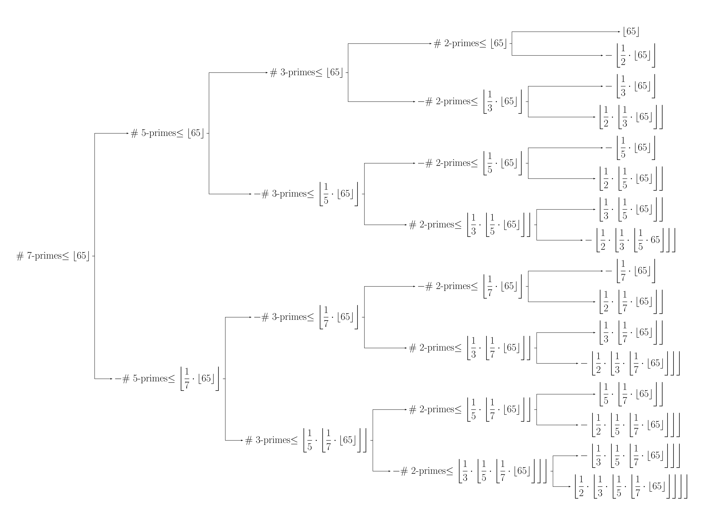

Descent in prime sieves
The following animation was made with the manim library for Python.
For each prime \(p\), let '\(p\)-primes' be natural numbers \(n\) such that:
\begin{equation} \tag{1}
\forall k'\le p, k\not\mid n;
\end{equation}
and let '\(p\)-mines' be natural \(n\) satisfying:
\begin{equation} \tag{2}
\forall k' < p, k\not\mid n \land p\mid n.
\end{equation}
To discuss descent and explain the above animation, I need to express the highest prime below \(p\) and the lowest prime above \(p\). These can
be written as \(\lhd{p}\) and \({p}\rhd\) respectively. Then, the second highest prime below \(p\) is \(\lhd\lhd{p}\), and the third lowest prime above \(p\)
is \(p\rhd\rhd\rhd\); these notations can be shortened to \(\lhd^2{p}\) and \({p}\rhd^3\).
If \(n\) is a \(p\)-prime where \(n\le N\) and \(p\rhd > \sqrt{N}\), then \(n\) is prime. The lowest \(p\)-mine other than \(p\) is always \(p^2\),
as lower multiples of \(p\) must be divisible by smaller primes. That is, all \(k'> \sqrt{N}\) have no composite mines below \(N\), so it is enough to remove
\(k\)-mines for \(k' \le \sqrt{N}\) to leave only primes remaining.
In the animation above, \(N=65\) and all the \(7\)-primes below \(N\) are prime.
It is clear from the definitions that all \(p\)-primes are \(\lhd{p}\)-primes and not \(p\)-mines.
The animation asserts that the number of \(p\)-mines below N is equal to the number of \(\lhd{p}\)-primes less than or equal to \(\left\lfloor N/p\right\rfloor\).
This can also be derived from equations 1 and 2; each \(\lhd{p}\)-prime below \(N/p\) will, when multiplied by \(p\), yield a \(p\)-mine; conversely each \(p\)-mine,
when divided by \(p\), will remain indivisible by all \(k'\le \lhd{p}\) and thus becomes a \(\lhd{p}\)-prime.
Consequently the number of \(p\)-primes less than or equal to \(N\) can be expressed in terms of \(\lhd{p}\)-primes as
To conduct the descent, one represents the number of \(p\)-primes below \(N\) as the difference between two groups of \(\lhd{p}\)-primes; then represents each of those groups as the difference between two groups of \(\lhd^2{p}\)-primes, and so on until the number of \(p\)-primes below \(N\) is presented solely in terms of integers. To find the number of integers below each bound \(x\), simply floor \(x\). The tree diagram below shows how this descent can calculate the number of \(7\)-primes below \(65\), which is the example used in the animation. 
In the above diagram, each parent node is equal to the sum of its two children. This means that the sum of all elements in a tier is the same for each tier. Then summing all sixteen elements in the fifth tier of the tree yields the number of \(7\)-primes below \(65\); that is,
This is confirmed by the animation; at its end, there are \(15\) rectangles remaining.
An algebraic expression for # p-mines ≤ N
Let \(\rho(p, N)\) be a function returning the number of \(p\)-mines less than or equal to \(N\). The aim of this section is to find an algebraic expression for \(\rho\). To begin, consider \(\rho(7, 65)\) as a specific case; regard it as the sum of all elements of the fifth tier of the tree diagram in Figure 1. Firstly, note that floored terms are only ever multiplied by unit fractions. This renders the nested floors in the final tier of the tree diagram redundant; only the outermost brackets are needed. Within each bracket, \(65\) now has a coefficient; outside the bracket, it has a sign. Consider the expansion
of which each term is a coefficient of \(65\), with its corresponding sign existing outside the delimiters. In the general case of \(\text{# } p\)-mines \(\le N\), each term in \[\prod_{k'=2}^{p}\left(1-\frac{1}{p}\right)\] is a coefficient of \(N\). Let each of these terms be indexed by \(r\) so that \begin{equation} \tag{3} \sum_r r=\prod_{k'=2}^{p}\left(1-\frac{1}{k}\right), \end{equation} then the \(\rho(p, N)\) is given by \(\sum_r \sign(r) \lf |r|\cdot N\rf\). Using the definition \(\lf x\rf = x - \{x\}\), where \(\{x\}\) denotes the fractional part of \(x\), we have:
Then, using the Fourier series expansion
the formula can be more analytically expressed as
There are equal counts of positive and negative \(r\), hence \(\sum_r \sign(r)=0\). Then the equation becomes
Finally, replacing \(\sin\) with its Maclaurin series expansion, where
yields the formula: